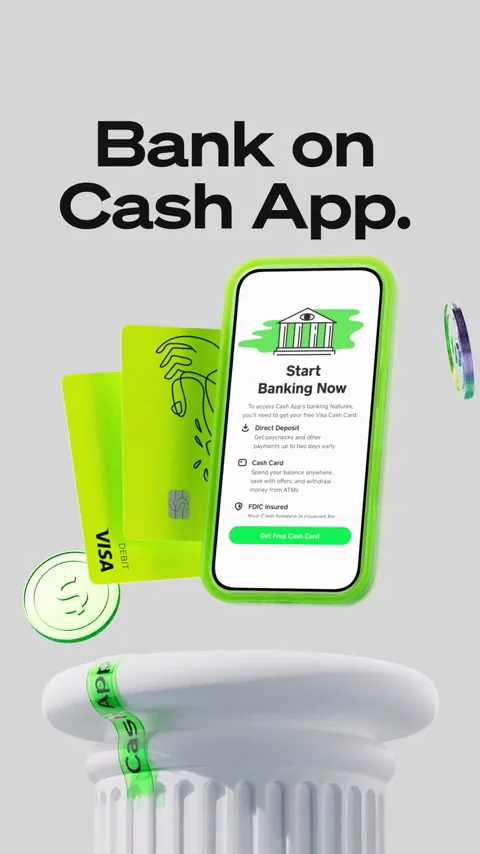
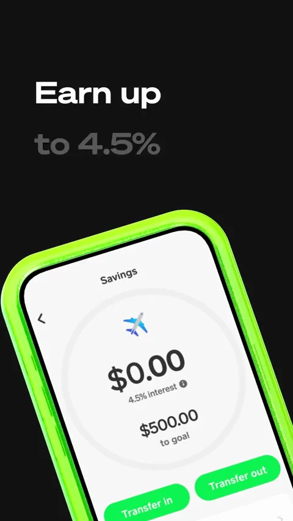
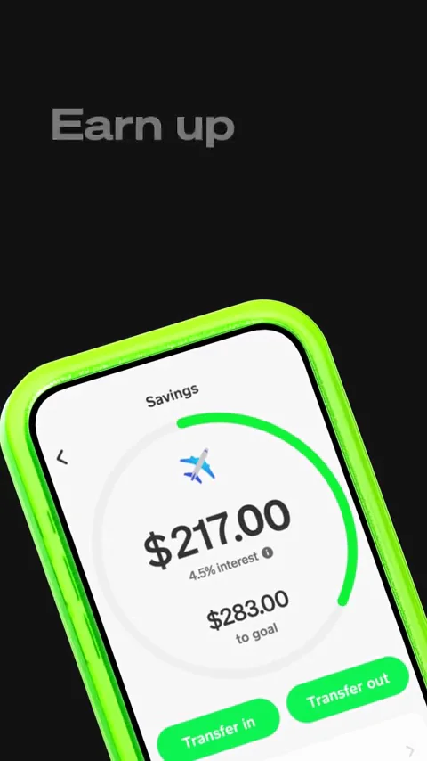

Cash App / V358
Cash App｜竖版产品应用
用同一手机串联利益点，黑、灰、荧光绿背景切换承担章节节奏。
构图与编排 可播放 · 可替换内容
整体编排规则示例
查看 HTML 源码
<!doctype html><html lang="zh-CN"><meta charset="utf-8"><meta name="viewport" content="width=device-width,initial-scale=1"><title>Cash App｜竖版产品应用 · sequence</title><style>html,body{margin:0;width:100%;height:100%;overflow:hidden;background:#06e928}canvas{display:block;width:100%;height:100%;object-fit:contain}</style><body data-mode="sequence"><canvas width="1000" height="600"></canvas><script src="data.js"></script><script src="common.js"></script><script src="scene.js"></script><script src="bridge.js"></script></body></html>画面元素竖版手机台座与卡片功能标题圆形余额胶囊高亮
MOTION LANGUAGE
动作与构图
局部动作 · 构图规则
01
标题在上，手机占下半画面
标题在上，手机占下半画面规则示例
查看 HTML 源码
<!doctype html><html lang="zh-CN"><meta charset="utf-8"><meta name="viewport" content="width=device-width,initial-scale=1"><title>Cash App｜竖版产品应用 · sequence</title><style>html,body{margin:0;width:100%;height:100%;overflow:hidden;background:#06e928}canvas{display:block;width:100%;height:100%;object-fit:contain}</style><body data-mode="clip" data-start="4" data-end="8.2"><canvas width="1000" height="600"></canvas><script src="data.js"></script><script src="common.js"></script><script src="scene.js"></script><script src="bridge.js"></script></body></html>台座场景先建立产品，随后用倾斜手机近景展示余额与进度。主张按短行排布，数字变化只发生在屏幕内，边框维持亮绿色身份。
02
费用短句用胶囊逐词强调
转到荧光绿全屏后，黑色圆角条在费用短句中逐项移动。粗无衬线大字与黑白灰产品面构成强对比，每次背景切换对应一个新信息点。
03
改主题要重写具体利益点
可迁移银行、会员或效率工具宣传。替换金额、功能文案和设备内容时保持同一个产品对象，结束用短句而非继续加入功能。
SEQUENCE
段落与节奏
点击段落，定位到上方编排示意。



画面参考 · 离散静帧
KEEP THE RELATIONSHIPS
制作其他主题
- 可迁移银行、会员或效率工具宣传。替换金额、功能文案和设备内容时保持同一个产品对象，结束用短句而非继续加入功能。
制作约束
竖版手机 / 台座与卡片 / 功能标题 / 圆形余额 / 胶囊高亮
- 用同一手机串联利益点，黑、灰、荧光绿背景切换承担章节节奏。
- 台座场景先建立产品，随后用倾斜手机近景展示余额与进度。主张按短行排布，数字变化只发生在屏幕内，边框维持亮绿色身份。
- 转到荧光绿全屏后，黑色圆角条在费用短句中逐项移动。粗无衬线大字与黑白灰产品面构成强对比，每次背景切换对应一个新信息点。